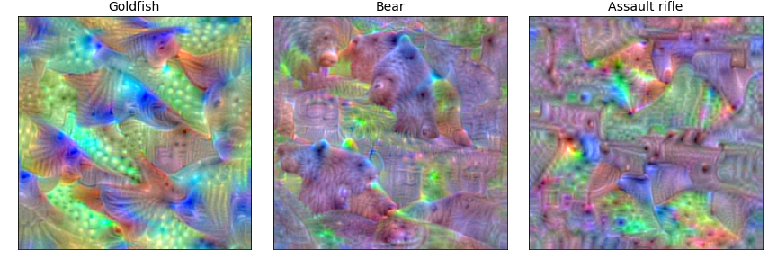
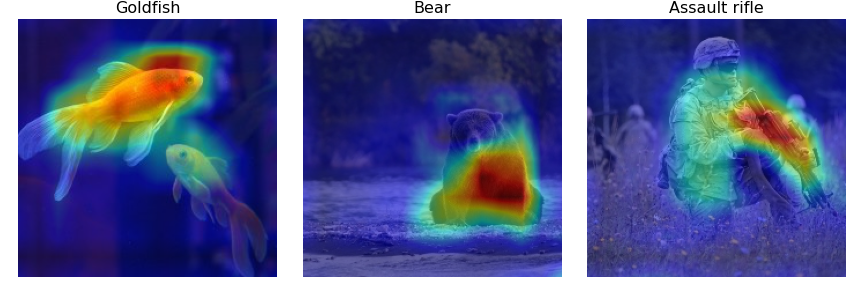

Welcome to tf-keras-vis!


Gallery
Dense Units

Convolutional Filters

GradCAM

GradCAM++
ScoreCAM
Vanilla Saliency
SmoothGrad
What’s tf-keras-vis
tf-keras-vis is a visualization toolkit for debugging tf.keras.Model in Tensorflow2.0+.
Currently supported methods for visualization include:
Feature Visualization
Class Activation Maps
Saliency Maps
tf-keras-vis is designed to be light-weight, flexible and ease of use. All visualizations have the features as follows:
Support N-dim image inputs, that’s, not only support pictures but also such as 3D images.
Support batch wise processing, so, be able to efficiently process multiple input images.
Support the model that have either multiple inputs or multiple outputs, or both.
Support the mixed-precision model.
And in ActivationMaximization,
Support Optimizers that are built to tf.keras.